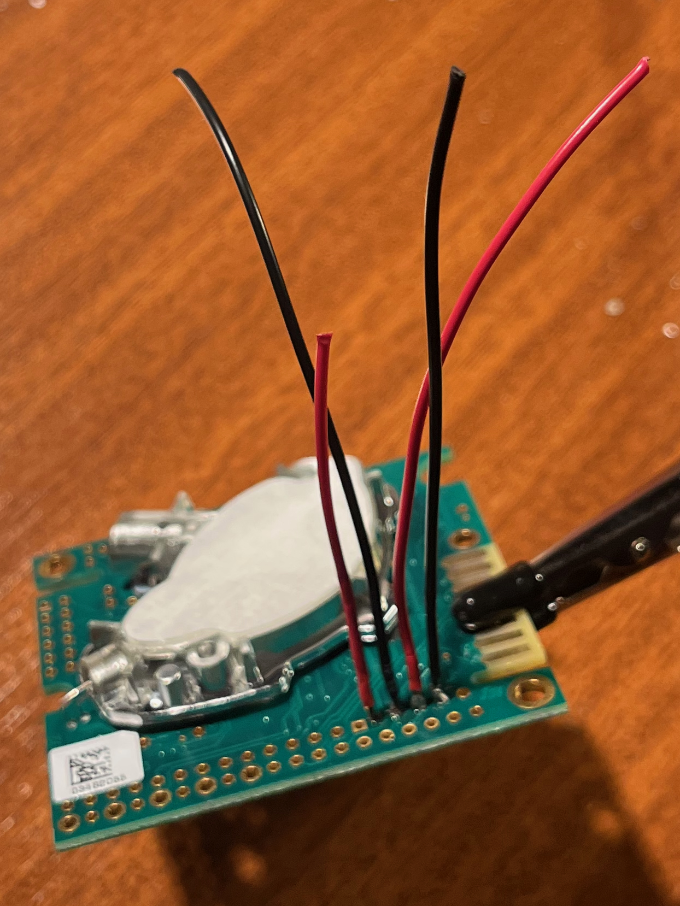
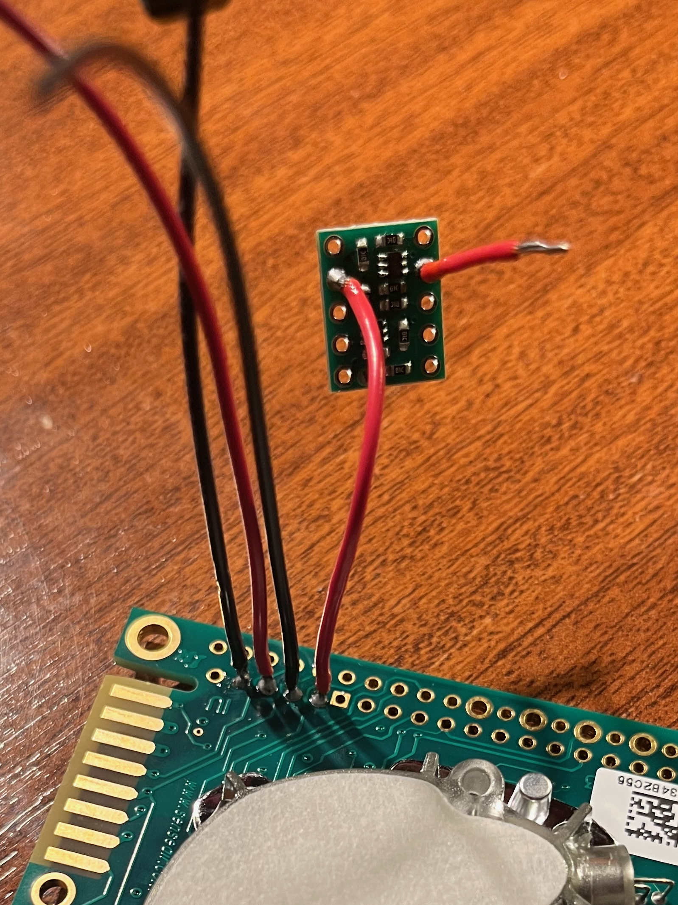
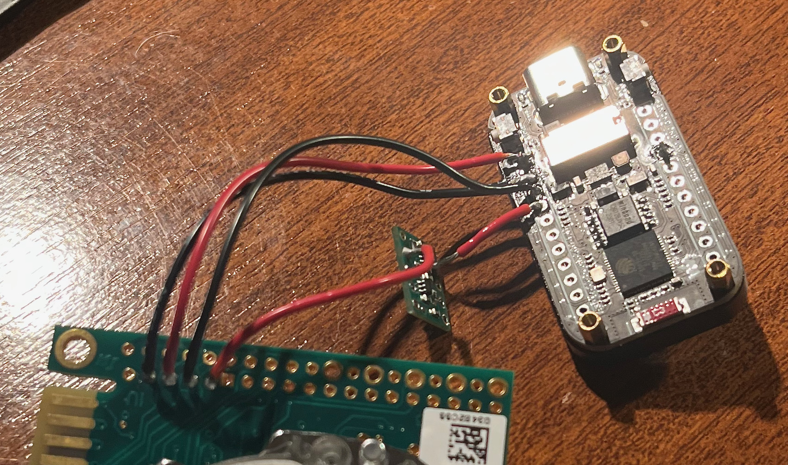
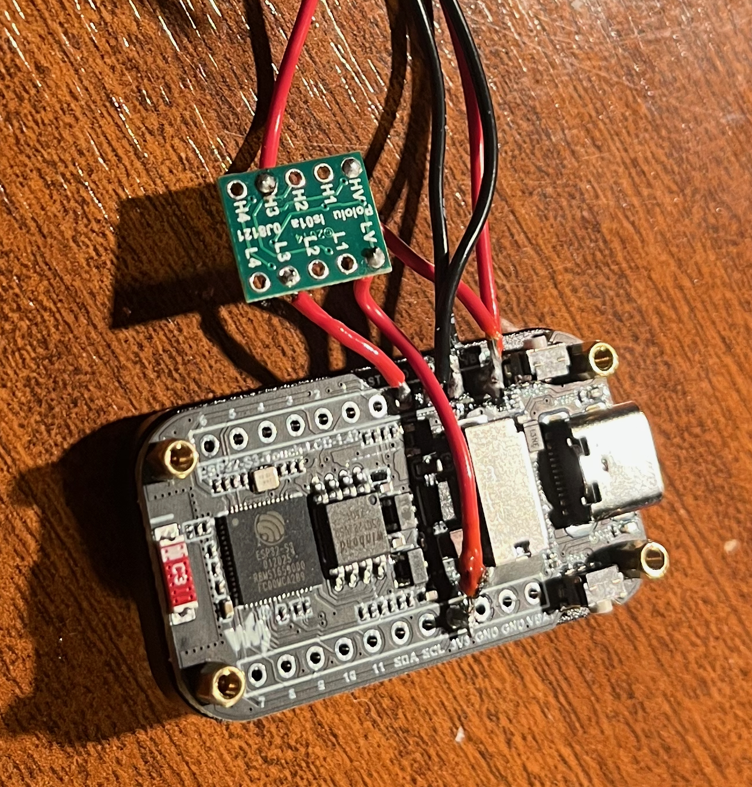
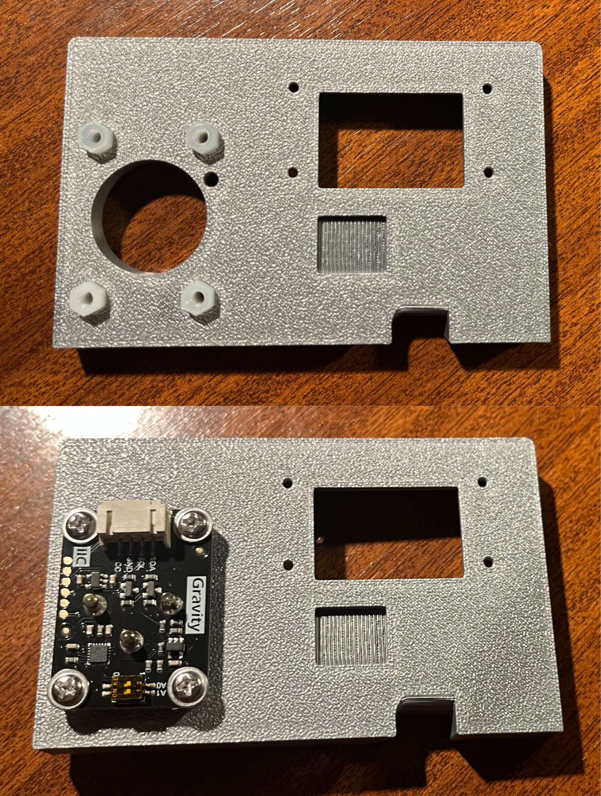
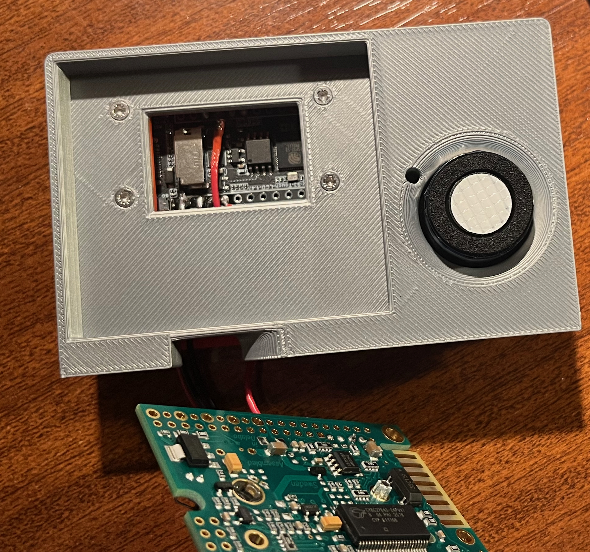
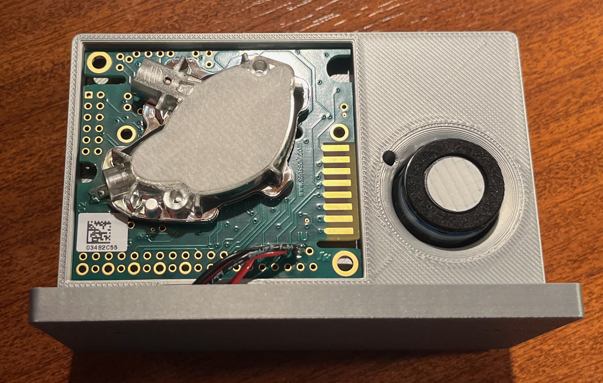

Assembly Guide¶
This guide details the physical assembly and wiring of the environmental gas monitor. Please ensure all 3D-printed parts are clean and free of support material before beginning.
This guide covers both variants. Steps unique to the CO₂ + O₂ variant are marked [CO₂+O₂ only].
> Before You Start: Read through the complete guide before beginning. Have the BOM and schematic open alongside this guide.¶
Materials & Prep¶
Required Tools: * Soldering iron & solder (fine tip recommended) * Wire strippers/cutters * M2 x 8mm screws (x4) * Small Phillips head screwdriver * Small flathead screwdriver (for O₂ sensor I²C dial)
Wire Preparation: Cut and strip the following lengths of wire (tin the tips for easier soldering): * 8.0 cm (x3): For K30 GND, PWR, and TXD. * 5.5 cm (x1): For K30 RXD. * 1.5 cm (x2): For Logic Shifter LV-side data lines. * ~4.0 cm (x1): For Logic Shifter LV power line. * ~2.0 cm (x1): For Logic Shifter HV power line. * [CO₂+O₂ only]: Four standard Dupont jumper wires for the SEN0322 (usually included with the connector on the device).
Phase 1: Print the Enclosure¶
Print the plate, fascia and base from the files in hardware/3d-print/stl/. Use the settings in the 3D print README.
- Ensure to remove all of the support material from parts.
- [CO₂+O₂ only] there are some difficult to remove supports in the channel of the fascia wherer the SEN0322 cables are routed.
[CO₂+O₂ only] Use the co2_o2/ STL files, which includes the SEN0322 sensor port.
Phase 2: Soldering & Component Prep¶
(Please refer to the included schematics for visual pinout confirmation. We recommend color-coding your wires: Red for 5V, Black for GND, and distinct colors for data lines).
1. Wire the K30 Sensor¶
- Solder 8 cm wires to the GND, PWR (G+), and RXD pads of the K30 sensor.
- Solder the 5.5 cm wire to the TXD pad of the K30.

2. Connect to the Logic Shifter¶
The Logic Shifter protects the 3.3V ESP32 from the 5V signals of the K30. 1. Solder the 5.5 cm RXD wire coming from the K30 to the H3 channel on the logic shifter. 1. Solder a 1.5 cm wire to the L3 pad.

3. Wire the ESP32-S3 (Main Brain)¶
Now, connect everything back to the ESP32 microcontroller: 1. Power: Solder the K30 PWR wire to the ESP32 VBUS (5V) pin. 2. Ground: Solder the K30 GND wire to the ESP32 GND pin. 3. Data (TX to K30): Solder the 1.5 cm L3 wire to the ESP32 RXD pin. 4. Data (RX from K30): Solder the 8 cm wire to the ESP32 TXD pin.

4. Power the Logic Shifter¶
The logic shifter needs reference voltages to know how to translate the signals. 1. Solder the ~2 cm wire from the ESP32 VBUS (5V) pin to the HV pad on the logic shifter. 2. Solder the ~4 cm wire from the ESP32 3V3 (3.3V) pin to the LV pad on the logic shifter.

5. [CO₂+O₂ only] Prepare the SEN0322 O₂ Sensor¶
The SEN0322 comes ready to use but requires configuration:
1. Set the I²C address dial to position 3 (address 0x73) to avoid conflicting with the touchscreen controller. The dial is on the top face of the board; use a small flathead screwdriver.
2. Connect the four wires:
* VCC → ESP32 3V3 (3.3V)
* GND → Common ground.
* SDA → ESP32 GPIO42.
* SCL → ESP32 GPIO41.

Phase 3: Bench Test Before Assembly¶
Before fitting anything into the enclosure, do a bench test with all components loose:
- Insert the microSD card (FAT32 formatted).
- Power the ESP32 via USB-C.
- The display should light up and show the boot sequence. After warmup, the K30 should start returning readings.
- [CO₂+O₂ only] The O₂ reading should appear after ~5 seconds.
Check the serial monitor in Arduino IDE (115200 baud) for any error messages. Common issues:
| Error Message | Likely Cause |
|---|---|
| SD mount failed | SD card not formatted as FAT32, or not inserted correctly. |
| CO2 disconnected | Level shifter wiring issue — check LV/HV reference connections and data routing. |
| O₂ sensor not found | Check SDA/SCL connections and ensure VCC is on 5V, not 3.3V. |
| Display blank | Backlight GPIO46 not driven — usually indicates wrong board selected in Arduino IDE. |
⚠️ Do not proceed to enclosure assembly until all sensors are reading correctly.
Phase 4: Physical Enclosure Assembly¶
1. Mount the ESP32 Fascia¶
- Carefully slide the ESP32-S3 screen-first through the slot in the 3D-printed Fascia part.
- Gently route and line up the attached cables so they point toward the back.
- [CO₂+O₂ only] - pass the SEN0322 connector through the slot in the fascia into the right hand side.

2a. [CO₂+O₂ only]: Mount the oxygen sensor on the plate¶
- Push the included hexagonal standoffs into the cutouts on the plate.
- Depending on the tolerances of your print, you may need to shave down the hexagonal edges end of the standoffs so that they can be push fit into the plate.
- Use the included fixings to attach the sensor to the plate, ensuring the calibration button aligns with the cutout in the plate.

2. Secure the Core Plates¶
- [CO₂+O₂ only] connect the SEN0322 connector to the sensor.
- Offer up the Plate part to the back of the Fascia.
- Line up the holes for the M2 screws so they pass through the Fascia, the ESP32 mounting holes, and into the Plate.
- Secure the assembly using the M2x8mm screws. Do not overtighten, as this can crack the plastic or the ESP32 PCB.

3. Seat the Logic Shifter & Sensors¶
- Position the Logic Shifter snugly into its dedicated cutout on the back of the Plate.
- Route the wiring to pass cleanly underneath using the bottom cutout.
- Take the wired K30 sensor and press it lightly into the Plate. This is a friction/push-fit design and should seat firmly.

4. Attach the Base¶
Choose your preferred finish for the bottom of the device: * The Base: Attach this push-fit part if you want the device to have a stand-like appearance. * The Insert: Use this part if you prefer a flush, flat-bottom, low-profile finish.

Phase 5: Final Power-on & Configuration¶
- Power via USB-C. Confirm the display shows the correct boot sequence and readings.
- Connect to the sensor's WiFi hotspot on your phone/laptop and navigate to
192.168.4.1. - Verify the web interface loads and shows the same readings as the physical device display.
- Use the Web UI Settings page to configure the
deviceName,location, and target WiFi credentials for the intended installation location.